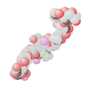
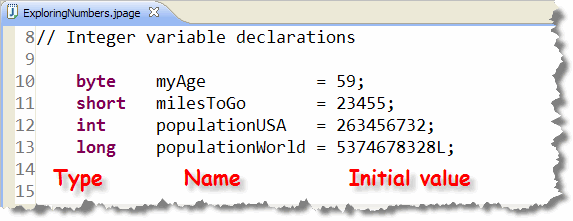
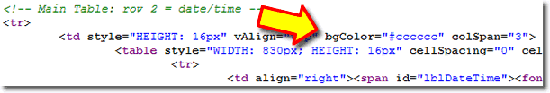

When you "look under the hood" of a Java program, what you find is a community of cooperating objects,

such as theString objects and Scanner objects
you've used in the programs that you've built so far. But, if you look even deeper,
putting each object "under the microscope", you'll discover a far simpler
entity—, called the primitive type.
Here in the "real" world, all of us understand that the objects we deal with every day—our cars and homes and even our pets and neighbors—are all constructed of simpler, and amazingly similar, primitive components: chemical compounds, molecules, (like the Hyaluronic acid molecule, shown to your right), and atoms.
The same is true in the computer programming world—no matter what the language, at some level, if you drill down deep enough, everything is made of bits, which are the atoms (or maybe the electrons, protons or quarks) of the computing world.
The Great Divide
While Java does have facilities for dealing directly with bits—the most primitive elements in the computer cosmology—you may never have to directly use one. (We won't cover these operators in this book, but here is a website with many examples.)
 There is a second
kind of Java creature, however, that you're certain
to encounter. These are the creatures that live midway between
the minimalist world of the bit and the comfortable world
of objects. We call these creatures primitives,
types, or fundamental types.
There is a second
kind of Java creature, however, that you're certain
to encounter. These are the creatures that live midway between
the minimalist world of the bit and the comfortable world
of objects. We call these creatures primitives,
types, or fundamental types.
If bits are the "atoms" of the computing world, then primitive types are the fundamental molecules, like water and iron.
What Are Primitives?
Primitives are much like Java class types, such as String
or Scanner, but the also differ from full-fledged objects
in three important ways:
 Primitive variables are scalar. That means that they
can hold only a single value like
Primitive variables are scalar. That means that they
can hold only a single value like 12or7.35. Objects, by contrast, usually have many attributes, all of which can take on different values. ADateobject has values for month, day and year, for instance.- Primitive values are manipulated only by operators,
while Java objects respond to messages. You can ask a
Stringobject for itslength(), but you have to use+or*with numbers. - The behavior of primitives is built-in. You cannot change the way that a number responds to the addition operator, for instance. With objects, on the other hand, if you don't like a behavior, you can change it by creating your own version of the class, and then writing a new method.
Why Primitives?
Many "pure" object-oriented languages, such as Smalltalk,
have no primitive types. In those languages, everything
is an object: not just Strings and
Scanners, but also numbers and characters.
This has the advantage
of consistency; users don't have to think about how to do
an operation because all objects work in a similar way.
On the other hand, having both primitive types for numbers and characters, in addition to more complex object (or reference) types, also has some advantages. The two most important advantages are:
- Simplicity: For arithmetic, at least,
primitive types, along with operators and operands,
seems easier to understand. Think about summing two numbers,
for instance.
For most of us, the thought of telling a number object to
add itself to another number object and then go tell a
third number object the result like this:
 is not nearly as intuitive
as writing
is not nearly as intuitive
as writing total = price + tax. - Efficiency: In general, primitive types consume less memory than objects do, and operations on primitive types run faster than equivalent operations on objects using methods.
The Four Families
Java has four "families" of primitive types:
- integers
- floating-point numbers
- characters
- true/false values called
boolean
In this section, we'll look at the integer and floating-point families of numeric primitives.
Meet the Integers
Integers are whole
numbers, including the counting numbers, zero and the negative
numbers. 27 is an integer, as is -345.
7.25 is not an integer, because it is not
a whole number.
In math, integers are infinite. Think of the biggest whole number you can imagine. No matter how big you make it, you can always make it bigger by adding one more digit onto the end.
In contrast, integer primitives—in the computer sense—are finite because each integer number must be stored in a fixed-size region of memory. This is just like the different tubs of popcorn at the movie theater: you get the same kind of popcorn in each tub, but the Small size doesn't hold as much as the Super size.
A computer type, like int, isn't really
an integer in the pure mathematical sense; instead, it's
just a representation of the abstract integer concept,
in the same way that a black-and-white photograph is a
limited representation of reality; both are subject to
certain constraints.
These "computer-style" integers come in two "flavors": signed integers, which represent both positive and negative whole numbers (as well as zero), and unsigned integers, which represent only zero and the positive whole numbers. All of Java's integers are signed integers, but other languages, like C++, have unsigned integer types as well, and you'll work with those if you continue on to CS 150.
Unsigned integers can represent numbers of a greater magnitude than an equivalently sized signed number, but both kinds have the same range. For instance, the largest unsigned integer that can be represented using two bytes of storage is 65,535, while the largest signed integer, using the same amount of storage, is 32,767. Both types, though, can represent 65,536 distinct integer values.
How Integers Are Stored
To understand how integer numbers are stored in memory,
you first need to understand a little about how binary
numbers work.
 Internally, all computers and all programs
use binary numbers to represent everything.
Everything includes text, numbers, sound, and graphics,
as you saw in Chapter 1.
Internally, all computers and all programs
use binary numbers to represent everything.
Everything includes text, numbers, sound, and graphics,
as you saw in Chapter 1.
A binary number is just like the decimal numbers you grew up with, except it uses base 2 instead of base 10. We call our decimal number system base 10, because it uses ten digits: 0 to 9. When we combine these digits together to produce larger numbers, the value of each digit depends upon its position in the number as a whole.
If the digit is in the first position, it represents the number of ones, the second position represents the number of tens, the third the number of hundreds, followed by thousands, ten-thousands, etc.
Here's an example. Consider the decimal number 4,123:
- Starting in the right-hand position is the digit 3. Since it's in the right hand position, this means our number has 3 ones.
- The next position is the number of tens, and the digit in this position is 2 so we add 2 * 10 or 20.
- The third position is the hundreds, and here we have the digit 1, so we add 1 * 100 or 100.
- Finally, in the fourth position, we have the digit 4. Since this is the thousands position, we have 4 * 1000 or 4000.
If we add all of those together—4000 + 100 + 20 + 3—we end up with our final number.
Plain (Unsigned) Binary Numbers
 In the base two or binary number system, there are
only two digits, 0 and 1, not ten
digits. (Of course, that's why binary is used for
digital computers, because electronic components like
transistors, which can be on or off, can easily
represent the binary digits in a binary number.)
In the base two or binary number system, there are
only two digits, 0 and 1, not ten
digits. (Of course, that's why binary is used for
digital computers, because electronic components like
transistors, which can be on or off, can easily
represent the binary digits in a binary number.)
Because we have only two digits, the positions in the number take on a different meaning. Instead of the ones, tens, hundreds, and thousands places, we have the ones, twos, fours, eights, and sixteens places. (Notice that each place is simply two times the place value to its right, just like in the decimal system, each place is just ten times the place value to its right.)
If we look at the binary number 1101, you can see that, in decimal, it represents 1 one, plus 0 twos, plus 1 four, plus 1 eight, or 13.
Signed Binary Numbers
While unsigned binary numbers are stored as just described, signed binary numbers are stored somewhat differently. Generally, signed numbers reserve the first numeric bit to specify whether the number is negative or positive. If the bit is set to one, then the number is negative and the value of the number is encoded in a different manner.
We won't cover the specifics of negative number storage in this course. You'll learn all the gory details in CS 242 or CS 216, along with Assembly Language. You will have to convert between decimal and "plain" binary in this class however.
Java Integer Specifics
Java's integer family has four members, the byte,
the short, the int, and the
long. Each of these primitive integer types uses
a specific amount of memory and thus, has a specific range of
values that can be represented.
Here are the specifics:
- The
bytetype uses, as you'd expect, a byte (8 bits) of memory, and can represent 256 different numbers: the numbers from -128 to +127. - A
shortuses two bytes (16 bits) of memory and thus can represent 65,536 different numbers—any whole number in the range -32,768 to + 32,767. - An
int, the most common number type you'll use in Java, uses four bytes (32 bits) of memory and can hold any number in the range -2,147,483,648 to +2,147,483,647, or, roughly, plus-or-minus two billion. - The granddaddy of all integer types is the
long, which uses eight bytes (64 bits) of memory and can hold values between, roughly, plus-or-minus nine quintillion. (-9,223,372,036,854,775,808 to 9,223,372,036,854,775,807 to be exact about it.)
You don't have to memorize the exact ranges, but you should have a rough idea without looking up the types. (+/-128, +/-32,000, +/-2 billion)
Integer Variables
To construct an integer variable, you just use one
of these four types in the variable declaration statement
like this:

In my example here, I've declared one variable each of typebyte, short, int
and long.
To initialize your new integer variables you can use integer
literals, existing integer variables, expressions, or input
methods. All of the examples here use integer literals.
To write an integer literal you simply write out the number, without commas or decimals. You may also use an optional sign character (+ or -), immediately preceding the digits, but nothing else.
As a stylistic matter, you really shouldn't use a plus (+) sign, since it is doesn't really have any meaning. Also, if you use a minus sign, don't leave a space between the sign and the first digit. That will make it easier for those reading your code to understand your intentions.
Integer Values or Literal Storage
If you look at the screenshot in the previous section, you'll see four variables, each preceded by its type. However, on the right-hand-side of each line, following the assignment operator, you'll see four literal integer values, each of which is copied into the variable on the left.
When standing by themselves, or when used in a calculation,
plain integer literals use 32 bits of memory; in other
words, integer literals are of the int type.
If a number is very small, (for instance, the literal number 3
which could easily be stored in a byte), it
still uses 32 bits of memory, not just 8.
When used to initialize variables smaller than an
int, such as myAge or
milesToGo (in the example at the beginning of this
section), Java copies the appropriate number
of bits from the int literal into a variable of the
specified size, after first making sure it will fit.
Here are two examples:
// Literal 10 uses 32 bits of storage
byte aByte = 10; // Copy 8 bits into aByte
byte bByte = 150; // Too large to fit into 8 bits; error
The literal values 10 and 150 both occupy 32 bits (or 4 bytes) in
memory. When the compiler examines this code, it "notices" that
no information will be lost in the first case, if three of those
bytes are discarded and the remaining byte is transferred to the
variable aByte. In the second case, though, the
compiler sees that information will be lost if only one
byte from the literal 150 is transferred to the variable
bByte, and so it refuses to allow it.
While Java always uses the int type for integer literals,
you can force it to use 64 bits to store an integer by appending
an L (for long) to the value like this:
3L. You'll find this useful when you learn about overloaded
methods because it allows you to call a specific method
by varying the type of the argument you pass.
myObject.someMethod(3); // calls someMethod(int)
myObject.someMethod(3L); // calls someMethod(long)
You also need to append an L when you want to write very
large literal numbers, like that used to initialize the
populationWorld variable in the example shown
at the beginning of this section. If you fail to add the
L at the end, the compiler will complain that the number
you've typed isn't a valid integer.
Other Integer Bases
When you write integer literals of any type, Java assumes you are using the decimal (base 10) number system. (These are still integers, however. Don't start thinking decimal point!) For those of you with a need to write literals in a base other than 10, you have two options:
- Java interprets an integer literal that starts with zero as an octal (or base 8) number.
- Java interprets literal numbers that start with zero-x, (or zero-X), as hexadecimal (or base 16) numbers.
For those of you with a need to write your integer literals in some other base, base-five or base-twelve, for instance, you're out of luck. Here are a couple of examples:
int ten = 10; // 1 ten + zero ones
int eight = 010; // 1 eight + zero ones
int sixteen = 0x10; // 1 sixteen + zero ones
Why Bother?
Why would you even want to use an octal or
hexadecimal literal instead of the more comfortable base-10
numbers we humans are used to? Well, for some applications,
hexadecimal is much more convenient. Here, for instance, is
the (typically convoluted) code for a Web page:

Like many HTML pages, the background and foreground colors are specified using hexadecimal numbers.Which Integer Type Should You Use?
Since you have the option of using four different types
of integers, which one should you use? In general,
you should use int unless you need a larger value,
in which case you would use long.
Specifically:
- Smaller sizes (
byteorshort) don't save memory, because calculations always useintorlong. You'll only save memory if you have large collections ofbytevalues, such as decoding an image. - If your calculations will produce intermediate values that
are larger than an
int, then you must use thelongtype. This is known as overflow, and, in Java, it occurs silently. Look at this expression:
 While this should evaluate to 400,000 * 1 (since
400,000 / 400,000 is 1). When you evaluate it, though,
you'll find that the results are a little bit different.
While this should evaluate to 400,000 * 1 (since
400,000 / 400,000 is 1). When you evaluate it, though,
you'll find that the results are a little bit different.